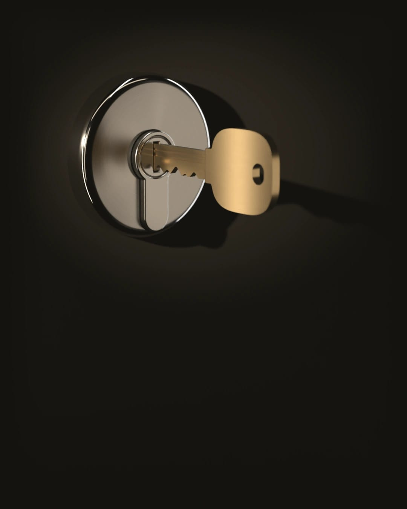
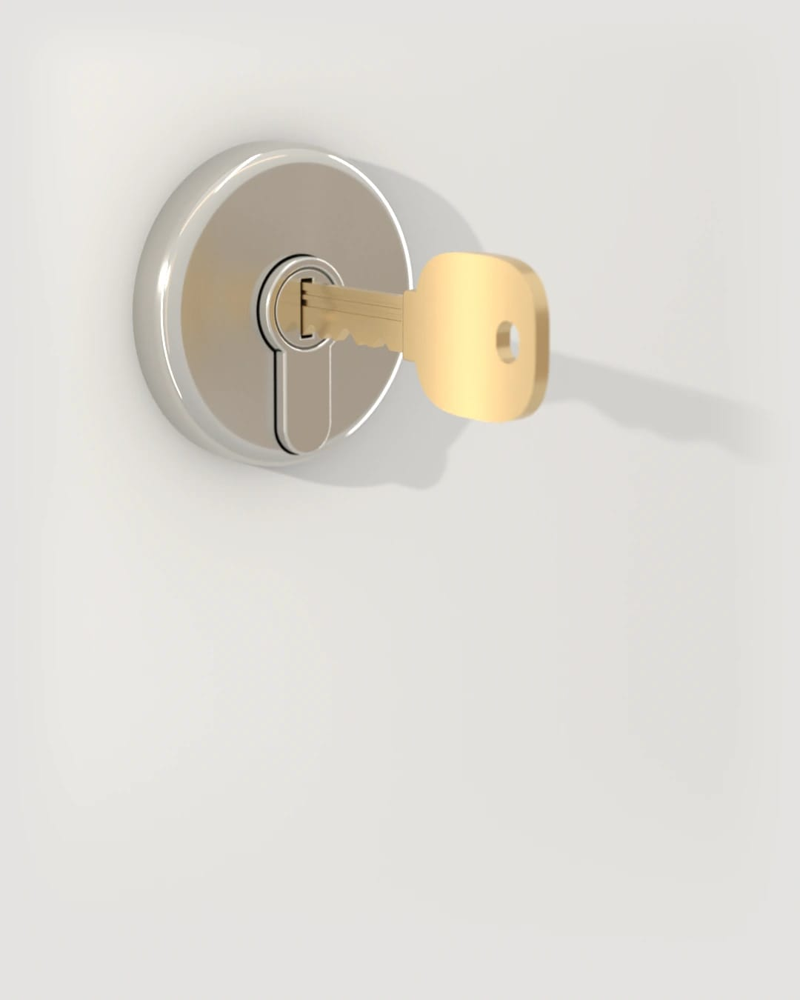
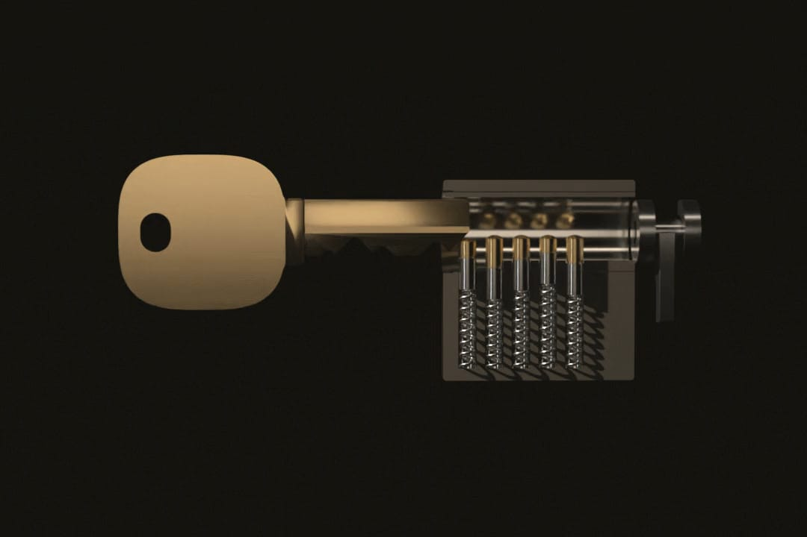
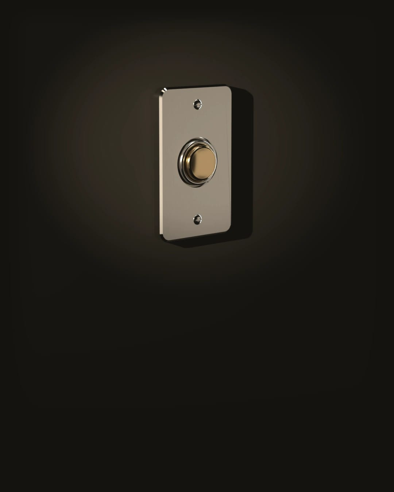

Un serrurier à proximité de chez vous
Porte claquée, clé cassée ou porte forcée : on vous envoie un serrurier jour et nuit.
On décroche jour et nuit, tous les jours.
Il est et on décroche : tarif de journée. Il est et on décroche : tarif de nuit.De votre appel à la porte ouverte

On décroche à trois heures du matin comme à midi.
Vous dites où vous êtes et ce qui coince : porte claquée ou fermée à clé, clé cassée ou cylindre qui tourne dans le vide.
Avant que le serrurier parte, on vous donne son prénom et le prix de départ. On vous prévient aussi que le déplacement et le diagnostic sont dus si vous refusez son devis, et compris dans le prix si vous l’acceptez.
Il vous appelle avant d’arriver. Sur place, il regarde la porte et la serrure puis vous remet le devis écrit. Vous décidez avant qu’il commence.
Il vous remet ensuite une facture détaillée. Si une pièce a été remplacée, l’ancienne est à vous et vous pouvez la garder. Après une effraction, rangez la facture avec le récépissé de plainte : votre assurance habitation vous demandera en général les deux.
En attendant, ne forcez pas la clé. Si elle casse dans le cylindre, il faudra d’abord en extraire le morceau et l’ouverture prendra plus longtemps.
Lire le déroulé completLe prix, avant qu’on touche à votre serrure

Le serrurier confirme le prix devant votre porte dans un devis écrit, avant de commencer. Si vous l’acceptez, le déplacement et le diagnostic sont compris dans le prix. Si vous le refusez, vous ne réglez qu’eux au prix indiqué dans le barème.
Voir le barème completBloqué dehors ou la porte ne ferme plus
-
Porte claquée ou fermée à clé
Les clés sont restées à l’intérieur ou vous les avez perdues. Une porte simplement claquée s’ouvre en général plus vite qu’une porte fermée à double tour.
Ouverture de porte : prix et déroulé -
Clé cassée dans la serrure
Le morceau est resté dans le cylindre. N’essayez pas de le sortir avec une pince : on l’enfonce plus souvent qu’on ne le récupère. Le serrurier l’extrait puis vérifie que le cylindre n’a pas souffert.
Clé cassée : ce que fait le serrurier -
Porte forcée après un cambriolage
Le soir même, il fait ce qu’il faut pour que la porte ferme. Il vous laisse une facture détaillée pour votre assurance.
Après un cambriolage : dans quel ordre agir

La nuit, on ouvre. Le reste attend.
Entre 21 h et 6 h, le serrurier fait le nécessaire pour que vous rentriez chez vous et que la porte ferme. Changer une serrure se décide de jour et au calme, devis en main.
Changer ou renforcer une serrure, sur rendez-vous
Vous emménagez et les anciens occupants ont peut-être gardé un double. Vous avez perdu un trousseau sans être bloqué dehors. Un appartement de l’immeuble a été cambriolé ou votre assureur demande une serrure certifiée.
Rien ne presse alors à la minute. On fixe un rendez-vous. Le serrurier vient voir la porte, mesure le cylindre et vous remet un devis. La visite et le devis sont gratuits. Si vous signez chez vous, la loi vous laisse 14 jours pour changer d’avis.

Qui sonne à votre porte
C’est un serrurier partenaire de votre secteur, un professionnel indépendant qui travaille avec nous. On vous donne son prénom avant qu’il parte.
Qui intervient chez vous
Vérifiez votre commune avant d’appeler
Nous ne sommes pas encore partout en France. Mieux vaut le savoir avant de composer le numéro.
Tapez les premières lettres : on vous dit si le serrurier vient jusque chez vous.
Combien, quand, jusqu’où : les réponses courtes
On décroche jour et nuit, tous les jours.
AppelerFaut-il payer d’avance ?
Non. Vous payez sur place quand vous avez la facture détaillée en main : par carte bancaire, en espèces ou par virement.
Le week-end, c’est plus cher ?
Non. Un dimanche ou un jour férié coûte le même prix qu’un mardi.
Si je refuse le devis, je paie quelque chose ?
Oui, le déplacement et le diagnostic : 75 € TTC le jour et 95 € TTC entre 21 h et 6 h. Si vous acceptez le devis, ils sont compris dans le prix. La visite et le devis sont gratuits pour changer une serrure sur rendez-vous.
Dans combien de temps le serrurier est là ?
Cela dépend de l’heure et de la distance. On préfère ne pas écrire ici un nombre de minutes qu’on ne tiendrait pas tous les soirs.
Vous venez jusque chez moi ?
Si votre commune fait partie de notre zone, oui. Sinon, dites-le dès le début de l’appel : on vous répond tout de suite si un serrurier peut venir, sans vous faire attendre pour rien.